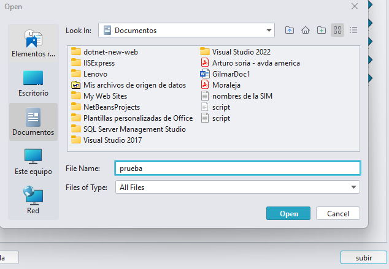

Para filtrar archivos, utiliza el combobox para seleccionar el criterio de filtrado (nombre o extensión) y luego escribe el valor en el campo de texto. Puedes presionar Enter o hacer clic en el botón de buscar para aplicar el filtro y mostrar los resultados en la tabla.
Para subir un archivo desde tu equipo, haz clic en el botón "Subir". Se abrirá un cuadro de diálogo donde puedes seleccionar el archivo que deseas subir. Una vez seleccionado, el archivo se cargará en el sistema.
En la tabla de archivos, encontrarás tres columnas de acciones: